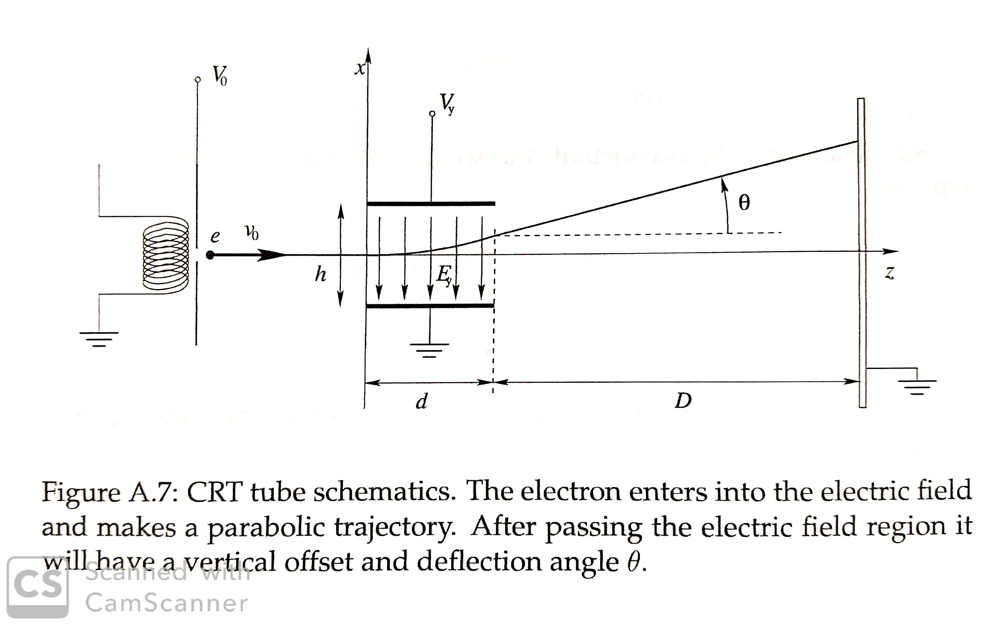

This project was inspired from a Physics Laboratory that is ran at California
Institute of Technology (CalTech) and Oregon State University for the Electricity
and Magnetism section of the General Physics with Calculus series of courses. The
project is a characterization of a cathode ray tube (CRT) monitor, explaining the
physics involved with how a CRT screen operates.
The CRT houses a device called an electron gun, a device which is capable of producing
an electron beam. This electron beam can be modulated by two electrical signals to alter
the X and Y projectile path of the electron gun.
Based on the diagram below there are two pairs of metal plates that are mounted such that
one pair of metal plates will be able to alter the X-direction of the electron beam and
the other pair is rotated 90 degrees relative to the X-direction plates so that they will
alter the Y-direction on the electron beam. Modulating the X-Y positions is accomplished by
creating an electric field between these two plates. By creating a voltage potential across
the plates, the electric field will travel from the plate with higher potential to the plate of
lower potential. These voltages are known as Vx and Vy due to their ability to alter the X and
Y positions of the beam. The deflected electrons hit the screen of your monitor, generating photons,
making the beam position visible on the screen. Figure A.7 demonstrates this effect.
The actual physics of the beam trajectory is described with a simple energy equation. The electrons
velocity vo coming out the electron gun can be calculated considering that the initial electric
potential energy is entirely converted to kinetic energy.
1/2*m*vo2 = e*Vo
Where e is the charge of an electron and Vo is the initial voltage that is applied to the last pair of metal plates.
From there, if you know the distance to your screen, you can calculate the time it takes for the electron to get to
the screen, the acceleration of the electron, whatever you need with kinematic equations. After I conducted this
experiment in my physics laboratory, I found it very interesting and wanted to discuss a solution that was not
purely kinematic (hence the use on the single energy equation).
